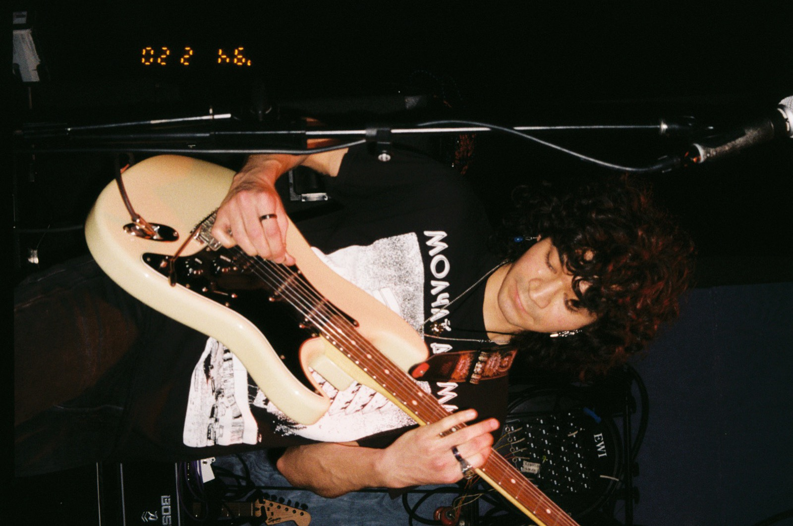

ghostbloodfilms
Hey there! I am Ian Xavier Garcia, also known as ghostbloodfilms. Nice to meet you! I’m an independent filmmaker and photographer based in Chicago. I graduated with my BFA in Film and Television from DePaul University in 2026. Two of my short films have been nominated for awards at DePaul Premiere Film Festival in 2026.
My work focuses on horror, gothic imagery, and music. I’ve always been drawn to horror, the occult, and the supernatural, so I felt it was only natural to expand on my favorite genre of media. Ever since I started creating stories as a kid, my dream has been to make my audience feel something. I’ve always been drawn to the dramatic, moody stories that completely immerse you in their universe. The stories that have you on edge and leave you paranoid the next day. Stories that desperately have something they need to say are the ones that motivate me to pick up my camera and plan my next shoot.
Photography and filmmaking feel like a natural combination for me. Both compose killer shots, work with unique characters, and capture the horrors of life. For me, it’s my love of music that ultimately ties the two worlds together. I’ve been playing music and messing around with cameras since I was in middle school! The world can be a scary place, but I hope my work can seize that horror and maybe, just maybe, turn it into something beautiful.
Oh, and I also do flashy commercial work, too, because everyone’s gotta eat.
With love,
ghostbloodfilms